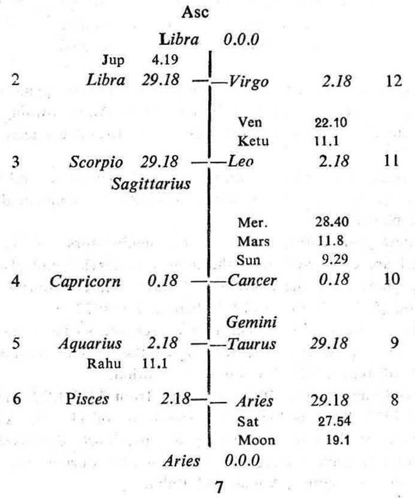
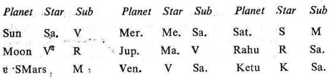

Question. Shall I be successful in an independent business?
Number. 125 (out of 249)
Place of Judgment. 23°N 2', 72°E 35'.
Time of Judgment. 26-7-1970, Sunday; 10-50 A.M. I.S.T.


If the cuspal sub lord of the 10th be the significator of 2, 7 or 10 an independent business or profession is promised during the joint period of the significators of 2, 7 and 10.
If the cuspal sub lord of the 7th be the significator of 2, 10 or 11 gain in business is promised during the joint period of the significators of 2, 10 and 11.
In this horary map Moon occupies the 7th (business) and owns the 10th (profession). It is in the star Venus which owns the Asc, 2 and occupies 11. So it is the significator of the Asc (self), 2 (self-earning) and 11 (gain and fulfilment of desire). Thus Moon clearly shows that the query refers to self earning, profession or business dealings with others and gain there from to fulfil the desire of the querent.
10th Cusp. The sub lord of the 10th cusp is Moon. Its star lord Venus is direct. It is the significator of 2 and 11 as discussed above. Hence an independent business is promised.
7th Cusp. The sub lord of the 7th cusp is Ketu. It is in its own star Ketu which is in conj. with Venus owning 2 and occupying 11. So Ketu represents Venus and it has to give the results of Venus. Hence the cuspal sub lord of 7 (Ketu) is the significator of 2 and 11 and it shows gain in business.
11th Cusp. The sub lord of the 11th cusp is Venus. It is the significator of 2 and 11 being in its own star. Hence the querent’s desire will be fulfilled.
Moon the owner of 10 (profession) is in conj. with Saturn the delaying planet in 7 (business). It is in applying conj.. So this position denotes that the querent has to keep patience for long.
But Moon is the significator of 2 and 11; and Saturn is the significator of 10 and 11. So the querent will be successful in the long run.
At the time of judgment the querent is running the period of Venus with 11Y 5M 21D in balance.
All the planets are the significators of 2, 7, 10 or 11; and the joint period of Venus, Rahu and Mercury is current from 14-7-1970 and continues upto 17-12-1970. So the querent will begin his business activities during this very period. Actually he started his business in the month of November 1970.
The period ruler Venus is the cuspal sub lord of 11 and this period continues upto 17-1-1982. So the querent will continue his business activities throughout this period.
He has to pass the sub periods of Rahu, Jupiter, Saturn, Mercury and Ketu in the period of Venus.
Rahu, Mercury, Ketu and Venus are in the sub Saturn. So the querent’s progress will be slow and steady.
Jupiter is in the sub Venus and Saturn is in the sub Moon. So their sub periods (17-3-1972 to 17-1-1978) will be favourable for making progress in business.
Ketu is the sub lord of the 7th cusp and its sub period starts from 17-1-1980 and continues upto 17-1-1982. As Ketu has to give the results of Venus owning 2 and occupying 11, it will be better than other sub period rulers.
It was learnt from the querent in the month of December 1974 that he was conducting his business on a small scale with a slow progress.